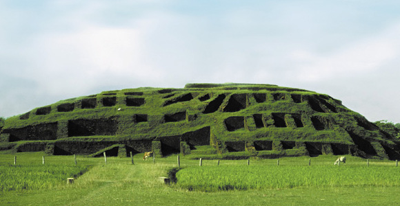
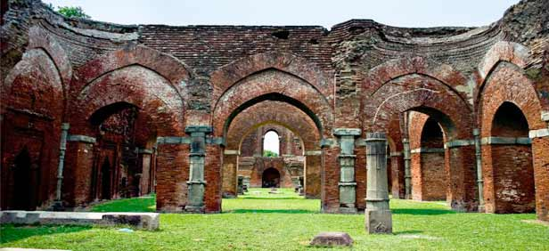
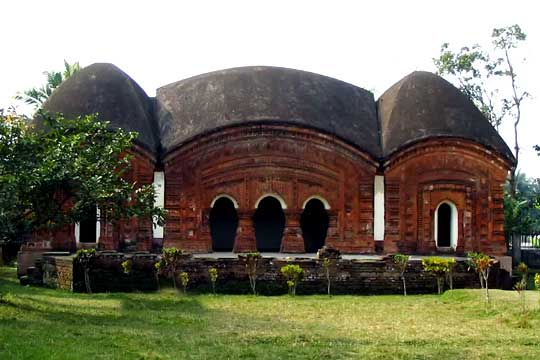
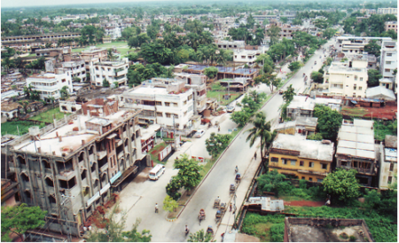

Beautiful Bangladesh
information of shylet
Some images of beautiful places of Syhlet




Rajshahi Tourist Spots are Puthia Temple, Godagari Royal Palace and more. Mainly this town is known as education city. Rajshahi, one of the oldest city of Bangladesh is full scenic beauty and historical background. It is the western metropolitan city and the main center of Rajshahi division. List of Top Rajshahi Tourist Spots Rajshahi city is full of interesting places and tourists spots. Every year lots of tourists come to visit these exciting places. Some of the Rajshahi Tourist Spots are: Bagha Mosque Bagdhani Mosque Bara Kuthi Bhuban Mohan parks Captain Mansoor Ali Park Borendra Museum Cadet College Hazrat Shah Sultan Bagdhani Mosque (Paba Upazila) Jami Mosque (Tanore Upazila) Kismat Madina Mosque New Govt. Degree College Puthia Temple Complex Puthia Rajbari Complex – Rajbari was built in 1895 for Rani Hemanta Kumari.Lashkarpur Degree College uses the place. Rajshahi Sugar Mills Rajshahi Medical College RU University Sarda Police Training Center Shahid Qumruzzaman central park University of Engineering & Technology Talando Shiva Mandir (1860), Rajbari, Tomb of Hazrat Shah Makhdum (R) Tomb (Mazar) of Hazrat Shah Sultan (Godagari Upazila) One domed Ruipara (Durgapur) Jami Mosque (sixteenth century) Two domed Kismat Madia Mosque (eighteenth century), Three domed Bhagna Jami Mosque at Tanore Upazila (1223 AH )